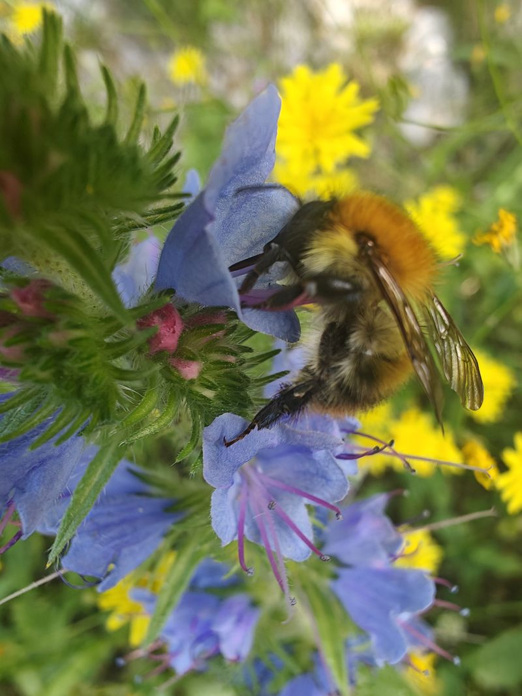

Qui suis-je ?

Je m’appelle Franck Repellin. Je suis apiculteur transhumant à Villard-de-Lans, dans le Parc naturel régional du Vercors. J’ai fondé ma miellerie en 2002.
Je travaille en agriculture biologique, avec plus de 400 ruches installées surtout dans le Vercors, et aussi en Provence.
Mes miels de pissenlit, de forêt, d’acacia, de montagne et de lavande portent la marque Valeurs Parc naturel régional.
À la miellerie, je propose des goûters, des ateliers, de la formation et des moments de découverte.